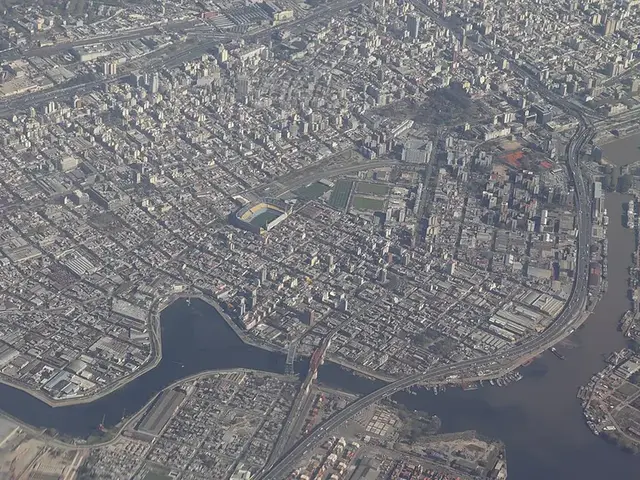

Renti
Senior software developer since 2023
Backend architecture, integrations and the Flutter app tenants use.
Senior software engineer and tech lead in Auckland. Tap the map.

Senior software developer since 2023
Backend architecture, integrations and the Flutter app tenants use.
Founder and director
A small engineering studio I am setting up in Auckland, for businesses whose tools should work together.